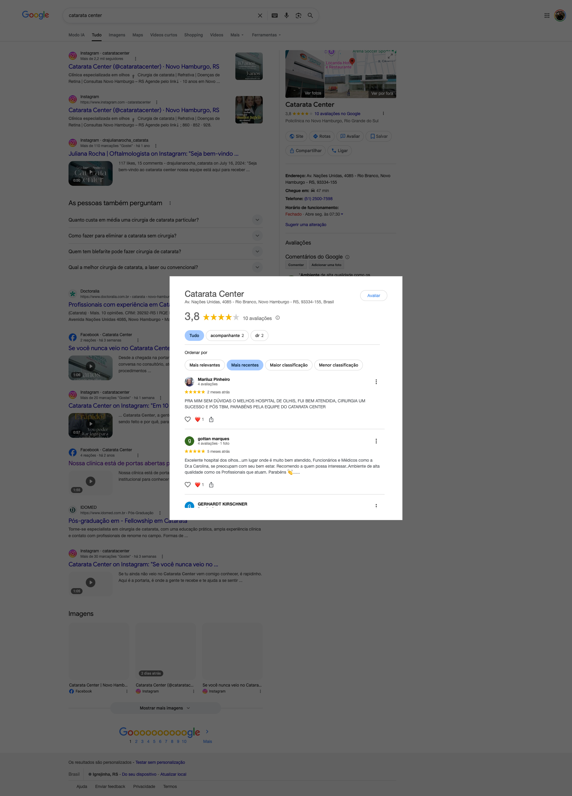
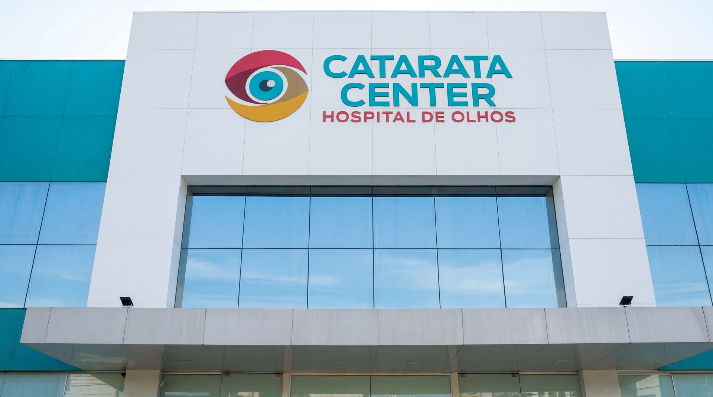

Proposta de Site Institucional
Hospital de Olhos

O cenário atual
O site cataratacenter.com está fora do ar. Quando alguém pesquisa pelo Catarata Center, encontra o Instagram, as avaliações e um botão "Site" que não leva a lugar nenhum.
O paciente que pesquisa antes de ligar — e são muitos — não consegue ver a clínica, a equipe, nem os serviços.
A entrega
Usamos o material audiovisual que já produzimos juntos — os vídeos da clínica, as fotos da equipe, os bastidores — pra montar um site completo. Ele já está no ar.
Ver o site agoraO que o paciente encontra
Seções
Apresentação, serviços, equipe, depoimentos, contato — tudo organizado pra guiar o paciente
Vídeos
Apresentação da clínica e mensagem da Dra. Juliana sobre os 10 anos — integrados no site, com áudio
Toque
O paciente toca no botão e cai direto no WhatsApp da clínica. Sem formulário, sem cadastro
Por que funciona
Aparece no Google
O site tem toda a estrutura técnica pra aparecer quando alguém buscar "oftalmologista Novo Hamburgo" ou "cirurgia de catarata".
Funciona no celular
7 em cada 10 pessoas pesquisam pelo telefone. O site se adapta a qualquer tela.
Converte em contato
WhatsApp direto em todas as seções. O paciente não precisa procurar o número — ele está sempre ali.
O que está incluso
Investimento
Site completo
R$ 5.000
Valor único, pago na assinatura do contrato.
Manutenção mensal
R$ 300/mês
Hospedagem, domínio e até 2 atualizações de conteúdo por mês.
Entrega imediata. O site já está pronto —
basta definir o endereço e publicar.

Próximos passos
Aprovação e assinatura do contrato
Definição do endereço do site (domínio)
Publicação em até 24 horas
Configuração do Google pra apontar pro site novo
O site resolve isso.